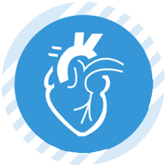
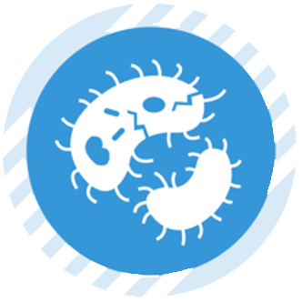
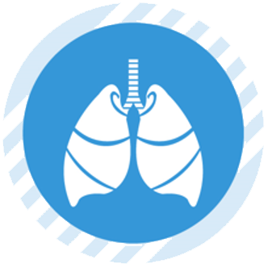
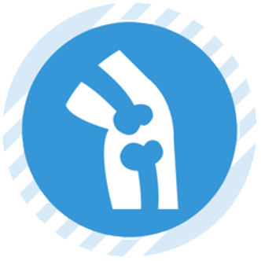

欧 姆 龙 学 术 空 间
- 首 页
- 学术活动
- 专家访谈
- 临床医学
- 健康科普
- 百问百答
- 高血压
领域 - 代谢
领域 - 呼吸系统
领域 - 疼痛及健康
领域
搜索
学术活动
 第八届中国血压监测学术会议 | 李燕教授：隐蔽性高血压降压治疗保护靶器官临床试验——ANTI-MASK研究与夜间血压监测的重要性
第八届中国血压监测学术会议 | 李燕教授：隐蔽性高血压降压治疗保护靶器官临床试验——ANTI-MASK研究与夜间血压监测的重要性-
第八届中国血压监测学术会议|智慧化高血压管理专题暨2022年五月血压测量月（MMM）项目启动仪式成功举办
-
五月血压测量月 | 为爱发声·聚焦血压——关注区域高血压发病特征，多手段提升基层血压筛查力度
-
传播血压监测理念，助力血压管理事业——第7届中国血压监测学术会议圆满举行
-
高血压年会2021 | 规范血压监测，融会智慧路径
MORE
专家访谈
-
王继光：
第八届中国血压监测学术会议 | 李燕教授：隐蔽性高血压降压治疗保护靶器官临床试验——ANTI-MASK研究与夜间血压监测的重要性
时间：2022-07-24
第八届中国血压监测学术会议|智慧化高血压管理专题暨2022年五月血压测量月（MMM）项目启动仪式成功举办
时间：2022-07-23
专家访谈 | 鲍一笑教授：以网络化、智能化为抓手，进一步提高儿童哮喘控制水平
时间：2021-09-17
高血压年会 2020 | 王继光：2019中国家庭血压监测指南要点解读
时间：2020-09-27
MORE
临床应用
高血压年会 2020 | 王继光：2019中国家庭血压监测指南要点解读
时间：2020-09-27
MORE
百问百答
疼痛疾病的基础知识
时间：2022-10-20
关于体温的基础知识
时间：2021-09-30
MORE
健康科普

高血压的控制与冠心病的防治

高血压防治科普小结

高血压达标与心律失常的预防

预防房颤、脑卒中与稳控高血压
MORE
© Copyright OMRON corporation 2022 All Rights Reserved.